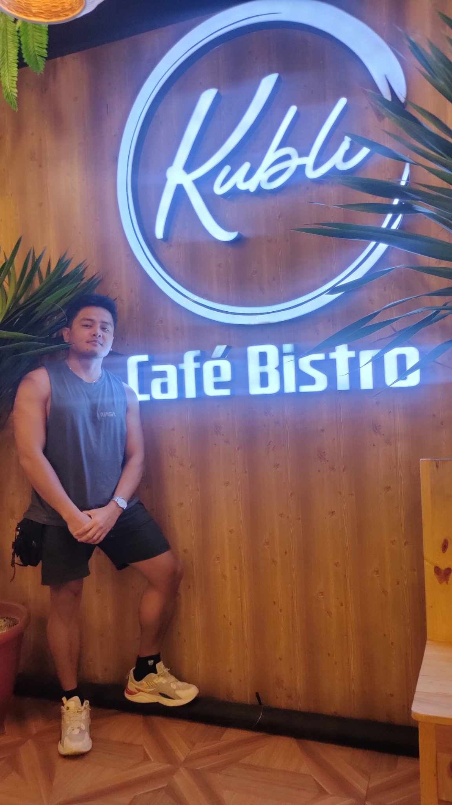
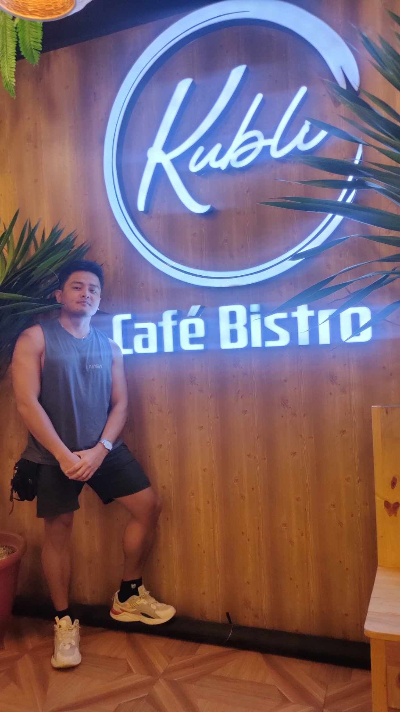
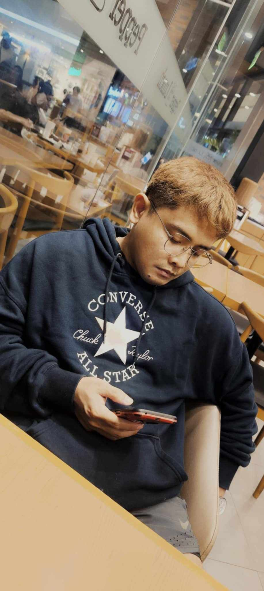
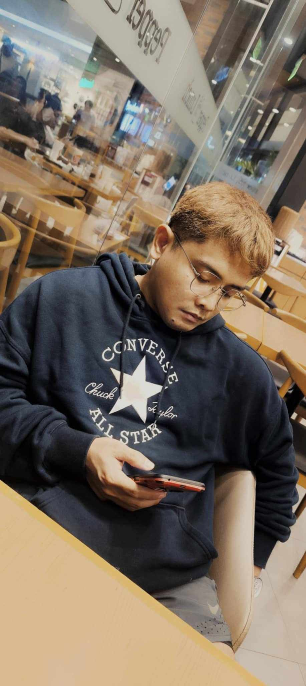
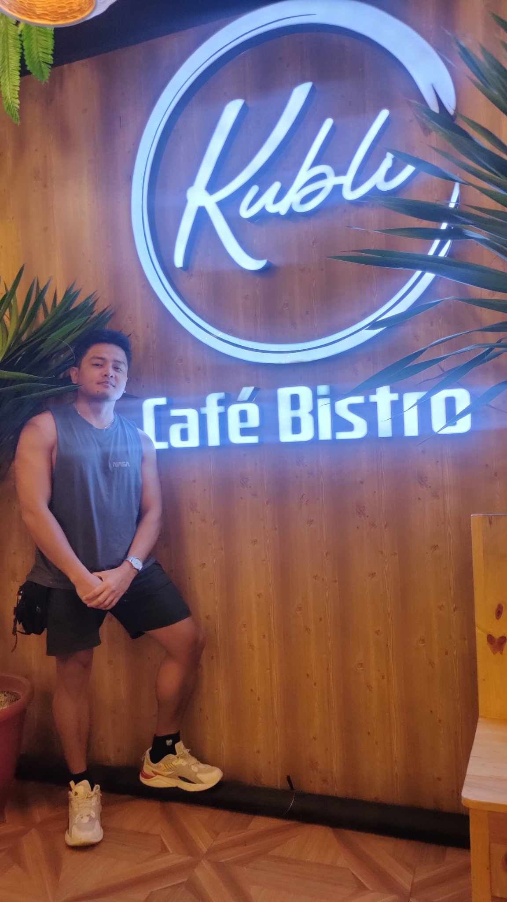
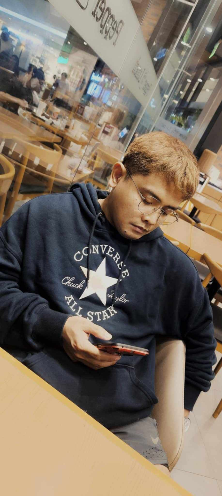

 



Hi, I’m Gregory Martin. I was born in Fort Bonifacio, Makati City, where I lived on #74 Sheridan Street. I loved waking up every morning, kicking my kuya awake if he was still asleep, and looking for my Mama. She was usually in the backyard watering plants, sweeping dried leaves, or chatting with neighbors about the latest chismis.
My Papa, a Philippine Army officer stationed at Fort Bonifacio Headquarters, would leave early every day—but not before kissing my younger brother on the cheek. I always wanted to hug him too, but I thought I was “too old” for that kind of goodbye.
Fun fact: If you search for Fort Bonifacio, Makati City on Google Maps, you won’t find it—it’s now part of Taguig City.
Looking back, you might think I was a Mama’s boy. But that’s just the perspective of 5-year-old me—cherishing the simple joys of home, wrestling with my siblings, and sneaking out on mini-adventures with my kuya.
But life doesn’t always go as planned. By the time I was 7, my parents had separated. My Mama left us in Tarlac to work in Manila, leaving my kuya, younger brother, and me with our father. That same year, my father entered a new relationship, and to keep it hidden, he sent my kuya and me to live with our uncle in Makati. When my Mama found out, she took us to stay with her at my aunt’s house in Bicutan, Taguig. A year later, she, too, started a new life.
By age 9, my life had completely changed.
At 15, I faced depression after being unable to continue my studies for the second semester. I often prayed, wishing I wouldn’t wake up anymore. Fighting depression was difficult, but I didn’t do it alone—I turned to God. I prayed for His guidance and strength to achieve my goals and become the person I wanted to be.
At 18, I started working as a service crew member, earning ₱260 for an 8-hour shift. A year later, my aunt offered to send me to college if I helped with her business. I accepted the opportunity, but when I moved in, she fired her housemaid, and I became her replacement. My routine began at 4 AM and ended at midnight, continuing until I graduated with a technical course.
During this time, I faced another heartbreaking moment—during our midterm exams, my father passed away. I wanted to stay at his wake all day, but I couldn’t because I was supporting myself through college. At his wake, I let go of all resentment and made a promise: I would succeed and take care of my Mama.
Today, I live in Carmona, Cavite, with my mother. I successfully graduated with a technical course in Computer Science Technology, earned a degree in Industrial Engineering, and am currently pursuing my Master’s Degree in Information Systems at UP Los Baños.
To my 5-year-old self: cherish the memories of our first home. Don’t be afraid to step out, move forward, and always keep faith in God. He may not give you all the answers, but He will guide you every step of the way.
“Just think of happy thoughts, and you’ll fly.” – Peter Pan
It’s not just about dreaming—it’s about holding on to hope even in your darkest moments. Life will throw challenges your way, but your strength lies in your resilience, your ability to keep moving forward, and your faith that better days are ahead.
So, dream big, stay grateful, and never lose the wonder of that 5-year-old child who once believed in happy thoughts and the power of family.

